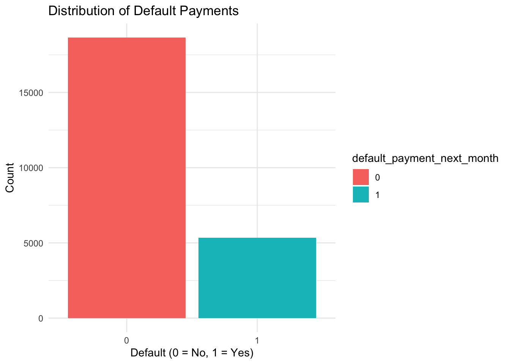
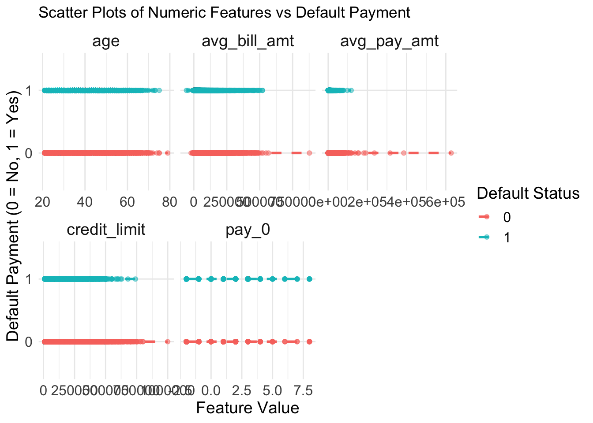
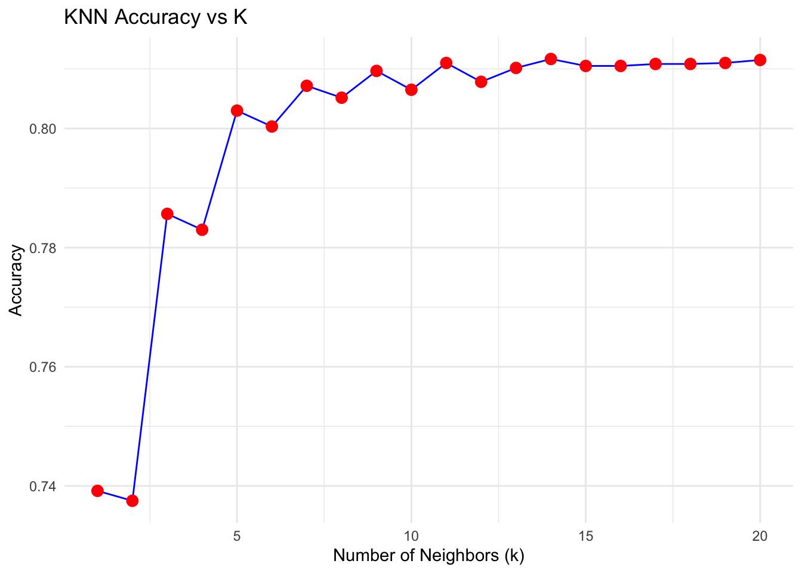

| ID | LIMIT_BAL | SEX | EDUCATION | MARRIAGE | AGE | PAY_0 | PAY_2 | PAY_3 | PAY_4 | PAY_5 | PAY_6 | BILL_AMT1 | BILL_AMT2 | BILL_AMT3 | BILL_AMT4 | BILL_AMT5 | BILL_AMT6 | PAY_AMT1 | PAY_AMT2 | PAY_AMT3 | PAY_AMT4 | PAY_AMT5 | PAY_AMT6 | default.payment.next.month |
|---|---|---|---|---|---|---|---|---|---|---|---|---|---|---|---|---|---|---|---|---|---|---|---|---|
| 1 | 20000 | 2 | 2 | 1 | 24 | 2 | 2 | -1 | -1 | -2 | -2 | 3913 | 3102 | 689 | 0 | 0 | 0 | 0 | 689 | 0 | 0 | 0 | 0 | 1 |
| 2 | 120000 | 2 | 2 | 2 | 26 | -1 | 2 | 0 | 0 | 0 | 2 | 2682 | 1725 | 2682 | 3272 | 3455 | 3261 | 0 | 1000 | 1000 | 1000 | 0 | 2000 | 1 |
| 3 | 90000 | 2 | 2 | 2 | 34 | 0 | 0 | 0 | 0 | 0 | 0 | 29239 | 14027 | 13559 | 14331 | 14948 | 15549 | 1518 | 1500 | 1000 | 1000 | 1000 | 5000 | 0 |
| 4 | 50000 | 2 | 2 | 1 | 37 | 0 | 0 | 0 | 0 | 0 | 0 | 46990 | 48233 | 49291 | 28314 | 28959 | 29547 | 2000 | 2019 | 1200 | 1100 | 1069 | 1000 | 0 |
| 5 | 50000 | 1 | 2 | 1 | 57 | -1 | 0 | -1 | 0 | 0 | 0 | 8617 | 5670 | 35835 | 20940 | 19146 | 19131 | 2000 | 36681 | 10000 | 9000 | 689 | 679 | 0 |
| 6 | 50000 | 1 | 1 | 2 | 37 | 0 | 0 | 0 | 0 | 0 | 0 | 64400 | 57069 | 57608 | 19394 | 19619 | 20024 | 2500 | 1815 | 657 | 1000 | 1000 | 800 | 0 |
Predicting Credit Card Default Behavior

1 Summary
In this study, we developed a classification model to predict whether credit card customers will default based on their demographic features, financial behaviors, and payment history. Using the Default of Credit Card Clients Dataset (Repository 2016), we analyzed key factors that contribute to default risk.
Our goal was to build a predictive model that can assist financial institutions in assessing credit risk more effectively. The k-nearest neighbors (KNN) algorithm was implemented to determine whether a customer will default in the next month. The model was trained on historical data, incorporating variables such as given credit limit, repayment status, history payments amount, and demographic characteristics. We evaluated its performance using confusion matrix. The KNN classification model achieved an accuracy of approximately 80%, with high sensitivity but low specificity, indicating that while the model effectively identifies non-defaulters, it struggles with correctly predicting actual defaulters.
2 Introduction
By 2023, approximately 1.25 billion people worldwide have credit cards, which is nearly 16% of the global population (Radage 2023). People rely on credit cards for everyday purchases, financial flexibility, and managing expenses. As credit card usage continues to grow, so does the risk of default, which is a significant concern for financial institutions. Credit card default occurs when a borrower fails to make their minimum payment obligations over an extended period of time (Streaks n.d.). Understanding the factors that contribute to default can help banks and credit card companies make informed lending decisions and develop better risk assessment models. Therefore, our research question is:
Will credit card customers default based on their demographic features, financial behaviors, and payment history?
The dataset used in this study is the Default of Credit Card Clients Dataset from the UCI Machine Learning Repository (Repository 2016), which contains 30000 observations and 24 features, including information on credit limit, demographic factors, history of payment, and bill statements of credit card clients in Taiwan from April 2005 to September 2005. The target variable, default.payment.next.month, indicates whether a customer defaulted (1) or did not default (0).
| Predictor Variable | Description |
|---|---|
CREDIT_LIMIT |
Amount of given credit in NT dollars |
SEX |
Gender (1 = male, 2 = female) |
EDUCATION |
Education level (1 = graduate school, 2 = university, 3 = high school, 4 = others, 5 = unknown, 6 = unknown) |
MARRIAGE |
Marital status (1 = married, 2 = single, 3 = others) |
AGE |
Age in years |
PAY_0 |
Repayment status in September 2005 (-1 = pay duly, 1 = payment delay for one month, …, 9 = payment delay for nine months or more) |
PAY_2 |
Repayment status in August 2005 (same scale as above) |
PAY_3 |
Repayment status in July 2005 (same scale as above) |
PAY_4 |
Repayment status in June 2005 (same scale as above) |
PAY_5 |
Repayment status in May 2005 (same scale as above) |
PAY_6 |
Repayment status in April 2005 (same scale as above) |
AVG_BILL_AMT |
Average amount of bill statement from April to September 2005 (in NT dollars) |
AVG_PAY_AMT |
Average amount of previous payment from April to September 2005 (in NT dollars) |
3 Methods & Results
3.1 Data Preprocessing
Cleaning & Handling missing values & Feature scaling & Train-test split.
Table 2 shows the first six rows of the dataset.
| LIMIT_BAL | SEX | EDUCATION | MARRIAGE | AGE | PAY_0 | PAY_2 | PAY_3 | PAY_4 | PAY_5 | PAY_6 | BILL_AMT1 | BILL_AMT2 | BILL_AMT3 | BILL_AMT4 | BILL_AMT5 | BILL_AMT6 | PAY_AMT1 | PAY_AMT2 | PAY_AMT3 | PAY_AMT4 | PAY_AMT5 | PAY_AMT6 | default.payment.next.month | AVG_BILL_AMT | AVG_PAY_AMT |
|---|---|---|---|---|---|---|---|---|---|---|---|---|---|---|---|---|---|---|---|---|---|---|---|---|---|
| 20000 | 2 | 2 | 1 | 24 | 2 | 2 | -1 | -1 | -2 | -2 | 3913 | 3102 | 689 | 0 | 0 | 0 | 0 | 689 | 0 | 0 | 0 | 0 | 1 | 1284.000 | 114.8333 |
| 120000 | 2 | 2 | 2 | 26 | -1 | 2 | 0 | 0 | 0 | 2 | 2682 | 1725 | 2682 | 3272 | 3455 | 3261 | 0 | 1000 | 1000 | 1000 | 0 | 2000 | 1 | 2846.167 | 833.3333 |
| 90000 | 2 | 2 | 2 | 34 | 0 | 0 | 0 | 0 | 0 | 0 | 29239 | 14027 | 13559 | 14331 | 14948 | 15549 | 1518 | 1500 | 1000 | 1000 | 1000 | 5000 | 0 | 16942.167 | 1836.3333 |
| 50000 | 1 | 2 | 1 | 57 | -1 | 0 | -1 | 0 | 0 | 0 | 8617 | 5670 | 35835 | 20940 | 19146 | 19131 | 2000 | 36681 | 10000 | 9000 | 689 | 679 | 0 | 18223.167 | 9841.5000 |
| 50000 | 1 | 1 | 2 | 37 | 0 | 0 | 0 | 0 | 0 | 0 | 64400 | 57069 | 57608 | 19394 | 19619 | 20024 | 2500 | 1815 | 657 | 1000 | 1000 | 800 | 0 | 39685.667 | 1295.3333 |
| 500000 | 1 | 1 | 2 | 29 | 0 | 0 | 0 | 0 | 0 | 0 | 367965 | 412023 | 445007 | 542653 | 483003 | 473944 | 55000 | 40000 | 38000 | 20239 | 13750 | 13770 | 0 | 454099.167 | 30126.5000 |
Table 3 shows the cleaned training dataset with new aggregated features.
| CREDIT_LIMIT | SEX | EDUCATION | MARRIAGE | AGE | PAY_0 | PAY_2 | PAY_3 | PAY_4 | PAY_5 | PAY_6 | default.payment.next.month | AVG_BILL_AMT | AVG_PAY_AMT |
|---|---|---|---|---|---|---|---|---|---|---|---|---|---|
| 20000 | 2 | 2 | 1 | 24 | 2 | 2 | -1 | -1 | -2 | -2 | 1 | 1284.000 | 114.8333 |
| 120000 | 2 | 2 | 2 | 26 | -1 | 2 | 0 | 0 | 0 | 2 | 1 | 2846.167 | 833.3333 |
| 90000 | 2 | 2 | 2 | 34 | 0 | 0 | 0 | 0 | 0 | 0 | 0 | 16942.167 | 1836.3333 |
| 50000 | 1 | 2 | 1 | 57 | -1 | 0 | -1 | 0 | 0 | 0 | 0 | 18223.167 | 9841.5000 |
| 50000 | 1 | 1 | 2 | 37 | 0 | 0 | 0 | 0 | 0 | 0 | 0 | 39685.667 | 1295.3333 |
| 500000 | 1 | 1 | 2 | 29 | 0 | 0 | 0 | 0 | 0 | 0 | 0 | 454099.167 | 30126.5000 |
Table 4 shows the final cleaned dataset after removing redundant columns and renaming features.
3.2 Exploratory Data Analysis (EDA)
Visualization for distribution of target variable, brief view of relationship between target variable and exploratory variables.

Figure 2 shows the distribution of default payments, highlighting the imbalance in the dataset.

Figure 3 uses facet grid with color for default class and trend lines, showing all the general distribution between numeric variables and the target variable
3.3 Model Training

3.4 Performance Evaluation
| Predicted | Actual | Count |
|---|---|---|
| 0 | 0 | 4382 |
| 1 | 0 | 291 |
| 0 | 1 | 911 |
| 1 | 1 | 416 |
Table 5 presents the confusion matrix of the KNN model’s performance.
| Value | |
|---|---|
| Accuracy | 0.7996667 |
| 95% CI (Lower) | 0.7893112 |
| 95% CI (Upper) | 0.8097300 |
| No Information Rate | 0.7788333 |
| P-Value (Acc > NIR) | 0.0000452 |
| Kappa | 0.3016785 |
| Mcnemar’s Test P-Value | 0.0000000 |
| Sensitivity | 0.9377274 |
| Specificity | 0.3134891 |
| Pos Pred Value | 0.8278859 |
| Neg Pred Value | 0.5884017 |
| Prevalence | 0.7788333 |
| Detection Rate | 0.7303333 |
| Detection Prevalence | 0.8821667 |
| Balanced Accuracy | 0.6256082 |
Table 6 summarizes the KNN model’s performance metrics.
4 Discussion
4.1 Summary of Result:
The best k-value for the K-Nearest Neighbors (KNN) model was determined to be 18. Figure 4 shows that as k increases, the accuracy stabilizes around 80%, suggesting an optimal balance between underfitting and overfitting.
From Table 6, our K-Nearest Neighbors (KNN) classification model achieved an accuracy of 79.97%, indicating that it correctly predicts default and non-default cases in about 80% of instances. However, the model performs significantly better at identifying non-defaulters (sensitivity: 93.77%) than defaulters (specificity: 31.35%). Table 5 reveals a high false negative rate (911 cases), meaning that many actual defaulters were misclassified as non-defaulters. The balanced accuracy of 62.56% suggests that the model struggles with class imbalance, favoring the majority class (non-defaulters). To improve the result, we could use techniques to balance the dataset and try other classification models.
4.2 Expectations:
These results are partially expected. Since credit card defaults are typically imbalanced datasets shown by Figure 2, it was anticipated that the model might struggle with detecting defaulters. However, the low specificity was lower than expected, meaning the model fails to accurately identify defaulters more frequently than anticipated.
- We expected some bias toward the majority class (non-defaulters), but the high false negative rate suggests that KNN may not be the most effective method for this classification problem.
4.3 Impact of Findings:
Ideally, the model can serve as a valuable tool for financial institutions in assessing credit risk and making informed lending decisions. Effectively distinguish between defaulters and non-defaulters, reducing financial losses by minimizing the risk of approving loans for high-risk individuals. However, in our model, the high false negative rate poses a risk to financial institutions, as they might approve loans for individuals who are likely to default. The low specificity could result in misleading credit scores, potentially granting loans to individuals who are unable to repay while unfairly rejecting creditworthy applicants. These findings highlight the need for improving predictive models.
4.4 Future Questions:
- How do external economic factors impact default rates?
- Our model focuses on individual demographic and financial characteristics, but macroeconomic conditions such as inflation, interest rates, and unemployment rates could also play a crucial role in credit card default. Some existing studies have shown that “credit card default is not related to the amount of credit card customer’s income, but significantly to the stability of income” (Li, Li, and Li 2019). Future studies could incorporate these external factors to improve predictive accuracy.
- Can other algorithms improve prediction accuracy?
- While KNN provides useful insights, exploring other classification models such as logistic regression, decision trees, etc. may yield better performance. A comparative analysis could determine the most effective model for predicting defaults.
- How does financial behavior change over time, and can we predict long-term default risk?
- Our model predicts default based on a fixed time period, but analyzing customer behavior over longer durations could reveal trends in financial stability.
5 References
ICI.Radio-Canada.ca, Z. É.-. n.d. “What You Need to Know about the New Credit Card Surcharge: RCI.” Radio Canada International, n.d. https://ici.radio-canada.ca/rci/en/news/1923776/what-you-need-to-know-about-the-new-credit-card-surcharge.
Li, Y., Y. Li, and Y. Li. 2019. “What Factors Are Influencing Credit Card Customer’s Default Behavior in China? A Study Based on Survival Analysis.” Physica A: Statistical Mechanics and Its Applications 526: 120861. https://doi.org/10.1016/j.physa.2019.04.097.
Radage, K. 2023. “The Growth of the Credit Card Industry in 2023.” Credit Card Processing and Merchant Account. https://www.clearlypayments.com/blog/growth-of-credit-card-industry-in-2023/.
Repository, UCI Machine Learning. 2016. “Default of Credit Card Clients Dataset.” Kaggle. https://www.kaggle.com/datasets/uciml/default-of-credit-card-clients-dataset/data.
Streaks, J. n.d. “What Is a Credit Card Default? A Complete Guide.” Business Insider, n.d. https://www.businessinsider.com/personal-finance/credit-score/what-is-a-credit-card-default.